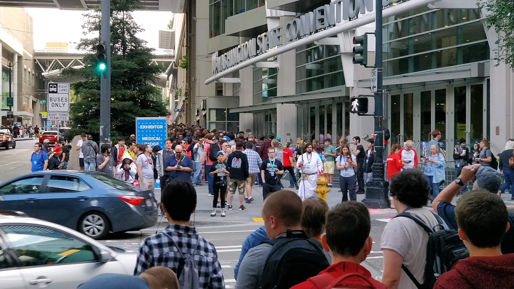
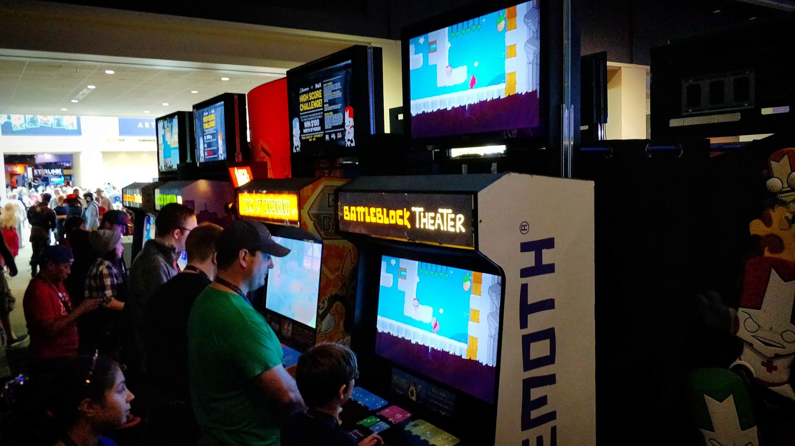

PRGE & NWPAS
Machines, collectors, players, repair knowledge and historical preservation meet in temporary public spaces.
Private collections → public playFIELD NOTES / A PERSONAL RESEARCH PROJECT
Games, people, machines and ideas converge for a weekend. Their connections reach beyond the exhibition hall.
Follow the story ↓
THE QUESTION THAT STARTED IT
Walking toward a convention in Seattle, I noticed activity before reaching the venue. That observation became a spatial question, then a network question: what gathers here, what happens nearby, and what carries on elsewhere?
CHAPTER 01 / THE IDEA
An informal research model for an event’s geographic reach. Begin with an anchor, then look for surrounding activity and the relationships connecting it.
An illustrative ring asks what might be observed around the venue. It is a way to frame investigation, not a measured boundary of impact.
Change the scale to explore the idea. No radius here represents a measured economic or causal effect.
A hotel activation, indie showcase or arcade meetup can become another center of activity. Proximity helps describe the pattern; source evidence tells us how an event relates to the convention.
CHAPTER 02 / THE EVENT BEYOND THE VENUE
Independent expos, publisher demos, tournaments and community gatherings documented around PAX West. Select a year, then choose a dot or an event to open the evidence.
Markers are approximate geocoded venue positions, not precise entrances. Events sharing a venue share one dot. Unresolved locations remain in the event list. The anchor depicts the downtown convention-center site for these documented years. Street data © OpenStreetMap contributors; served with this website. No API key required. Missing records do not mean no activity occurred.
Select an event to read its story and source.
INSIDE THE ANCHOR / PAX WEST 2018
My photographs document arcade cabinets, console freeplay and the crowd at the entrance. These images belong to the PAX anchor, rather than to an offsite satellite.

A PARALLEL EXPO / SEATTLE INDIES EXPO
The workbook documents a free independent showcase during PAX weekend, with changing venues and growing participation. It illustrates how an event district can have multiple centers.
Selected organizer-reported observations. These do not measure how much growth PAX caused. 2015 archive ↗ · 2025 impact report ↗
CHAPTER 03 / BUILDING A TEMPORARY ARCADE
A convention has a life before and after its public opening. Follow equipment, people and space through three stages, with my photographs alongside the model.
A SHORT DOCUMENTARY MODEL / PRGE 2019
Play the sequence, or choose a scene. The moving dots illustrate visitors and crew; the photographs document moments from the event.
01 / 15 · empty
Before the public event, the hall is a space waiting to be transformed.
This is a new illustrative process model based on my photographs and our discussion. Scene durations, visitor paths, equipment positions and dot counts are storytelling choices, not measured PRGE timings or attendance. Speaker, purchasing and nighttime scenes are modeled activities; the photos are not presented as evidence of a specific schedule.
THE PROCESS MODEL / SELECT A STAGE BELOW
Unload → position → connect → test
Ready for public activityArrive → play → compete → maintain
Public program endsDisconnect → protect → pack → load
Venue clears; equipment dispersesArrows describe the proposed sequence. Selecting a stage highlights the model and its matching photo evidence.
01 / SETUP
The sequence organizes observed activities; it is not a timed simulation. Photos document specific moments, while arrows describe the proposed flow.
MY PHOTOGRAPHS · USED WITH PERMISSION
The public arcade is one phase in a larger cycle of transportation, assembly, participation and removal.
CHAPTER 04 / A PERMANENT SCENE TAKES SHAPE
I follow documented openings from a family arcade to a barcade, a board-game and pinball pub, a VR space and a pinball-focused venue. I name the businesses, while omitting the people involved. This schematic map separates documented openings from neighboring cultural activity and undated research leads.
Positions illustrate the wider scene, not addresses or distances. Green nodes are documented arcade openings; rust nodes are surrounding context. An undated bookshop lead is shown in gray. Historical appearance does not establish continuous operation.
Evidence: workbook “Bremerton Diffusion” and “R Cluster Timeline,” drawing on contemporary local reporting and a 2024 retrospective. Business names are retained; personal names are omitted. Current context, reopenings and undated leads are distinct from the five documented arcade openings.
I remember Another Castle as part of this scene. A 2024 local retrospective reports that it was taken over and reopened as Town Portal. I show this as a change in name and operation, preserving the historical venue rather than assuming that activity vanished.
CHAPTER 05 / THROUGH TIME
Explore selected historical measurements from the workbook. Each observation keeps its year, metric, unit, scope and source. An absent point stays absent.
Points are documented observations. No interpolation. Labels preserve approximate, upper-bound and lower-bound values. Different scopes may not be directly comparable.
| Year | Observation | Scope | Evidence | Source |
|---|
The workbook identifies a 2006 Portland predecessor event and connections to later regional shows. It does not yet contain a complete year-by-year venue history. The map should grow with that evidence rather than imply a documented route we do not have.
Read PRGE’s history ↗CHAPTER 06 / DIFFERENT EVENTS, DIFFERENT FLOWS
A collector convention, an indie showcase and a trade show gather different people and equipment. Their sizes alone cannot explain what moves between them.
Machines, collectors, players, repair knowledge and historical preservation meet in temporary public spaces.
Private collections → public playPlayable projects, developers and audiences gather in multiple venues during a shared event weekend.
Creators → discovery → connectionsManufacturers, exhibitors and buyers meet around commercial attractions, equipment and business relationships.
Equipment → demonstration → buyersSelect an annual series to inspect the workbook’s attendance observations. These are separate series; they do not establish equivalent audiences or arcade-specific activity.
| Year | Status | Attendance | Source |
|---|
CHAPTER 07 / THE RESEARCH DESK
I bring together a research workbook, conceptual models and my firsthand photographs. It is designed for exploration and an R data-analysis presentation.
Geocoding provides approximate venue positions, not historical verification. Counts are minimum documented coverage. The standardized network sheets describe 2026 relationships and do not yet include SIX. Their heterogeneous weights should not be treated as a single strength scale.
Personal photos document visible activities. They do not establish attendance totals, economic impact, machine ownership or transport origins and destinations.
This website is rendered from a Quarto project and uses a browser-based Leaflet map with prepared workbook data. The interactive diagrams and charts run in JavaScript; they are not executed R analyses. The downloadable R script demonstrates filtering, joining venue coordinates and rendering clickable Leaflet markers. It also provides an optional Shiny year selector. The R script has not been executed in this environment.
events |>
filter(Year == selected_year) |>
left_join(venues, by = "Venue_ID") |>
filter(!is.na(Latitude), !is.na(Longitude))